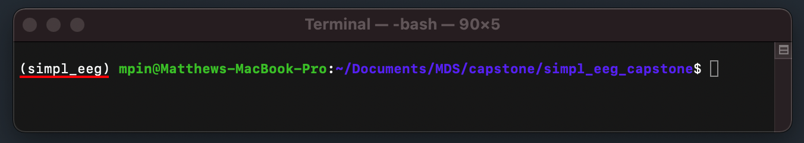
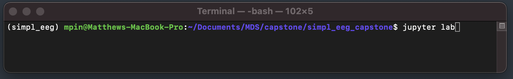
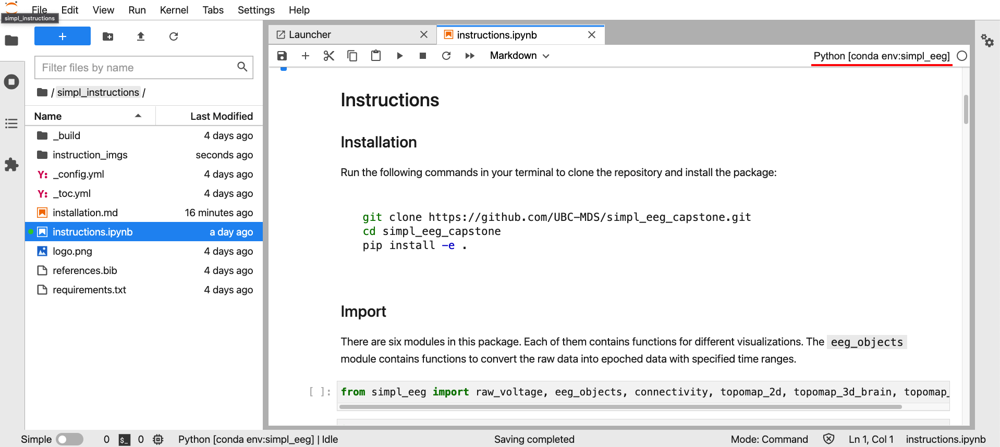
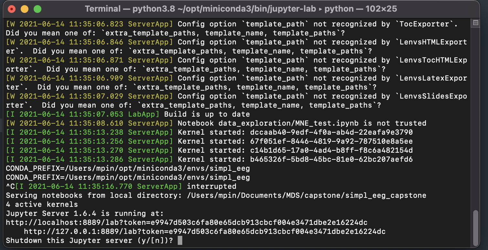
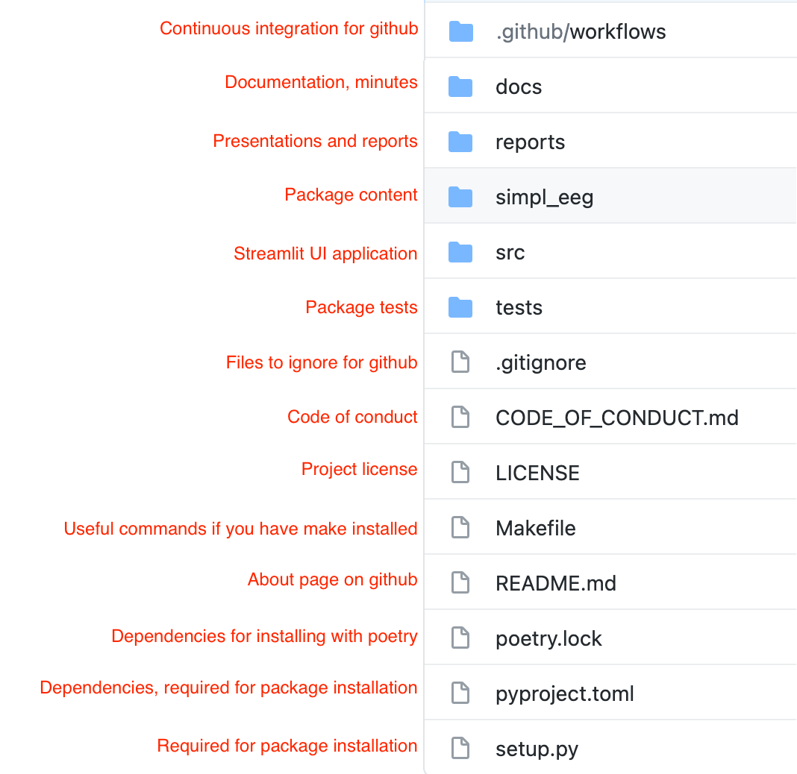

Install guide¶
Pre-requisite computer setup¶
If you have never used terminal before, please consult the following instructions in order to setup up the necessary tools. These instructions will continue to be update into the future so they should remain current.
https://ubc-mds.github.io/resources_pages/installation_instructions/
Please fully install the sections with the following headers…
Windows
Git and Bash
Python and Conda
Mac and Ubuntu
Git
Python and Conda
Package Installation¶
Installing the simpl_eeg package in a new environment¶
Please open your Unix shell (i.e. terminal on a Mac, GitBash on Windows) and navigate to a folder you will use to store the files (if you’ve never used a terminal before please look at the following instructions https://swcarpentry.github.io/shell-novice/02-filedir/index.html to help you navigate). Your current directory (“location” in your computer files) is listed after (base). Some basic commands which might help navigate include…
lslist all files/folders in your current directorycdmove to a different directorycd/foldermoves you into that folder and makes it your current directory.cd..moves you one layer out of the folder you are currently in to one directory above it.

Tip
Pro tip: press tab when typing a file location to use auto-complete and have the remainder of the file name be completed automatically. For example, typing ‘M’ (then pressing tab) will have the terminal automatically match the file name ‘MDS’ since there are no other files names which start with ‘M’).
Then clone our repo using…
git clone https://github.com/UBC-MDS/simpl_eeg_capstone.git
And enter the root of the directory using…
cd simpl_eeg_capstone

OPTIONAL If you use python for other programming on your computer it is recommended you create a new environment. See Conda Environment section for details.
Finally, double check that you are in the simple_eeg_capstone directory and install the package contents using…
pip install -e .
So what have we done? We created an environment to contain the package that we have prepared. This environment can be activated in any terminal window using the conda activate simple_eeg command (this must be done every time you re-open the app/terminal window). You will know that you are in this environment when the bracketed words in the terminal say (simple_eeg) like such…

Streamlit¶
Launching The Streamlit UI¶
Navigate to the root of the directory and run the following command (this will lock this terminal window into running the app until it is shut down)…
streamlit run src/app.py

This will cause the UI to open in your browser like such…

You can refresh the UI to restart it or open it in another window by copying the url (http://localhost:8501/). Note, the port “8501” may vary depending on how many sessions you have running
Shutting down Streamlit App¶
When you are done (or if you need to restart the app) simply navigate back to the Terminal window you used to launch the app and press Ctrl + C (PC/Linux) or Command + C (Mac) and then press y to confirm to shut down the app. This will return the terminal window to the state that it was in before launching the app, allowing you to type commands again.
Troubleshooting Streamlit¶
Every subsequent time you open the UI remember to activate the simple_eeg environment and open it from the correct location (the root of the directory).
If you made an environment when first setting up (you can check if you did by running conda env list in the terminal and seeing if ‘simpl_eeg’ is listed) you can set your current environment for the currently open terminal tab using the following command…
conda activate simpl_eeg
Being in the root of the directory means that your location in terminal should end with simpl_eeg_capstone$
For example…
(simpl_eeg) mpin@Matthews-MacBook-Pro:~/Documents/MDS/capstone/simpl_eeg_capstone$
Conda Environments¶
Setting up an environment¶
Environments are used to place python packages in their own isolated file space and are useful if you need different versions of different packages (i.e. Python 2 and Python 3). If you don’t do any other python programming you may want to skip this section.
Create a new environment:
conda create --name simpl_eeg python=3.8
(then press “y” to accept when prompted)
Activate the environment:
conda activate simpl_eeg
If you plan on using JupyterLab, make sure to also run the line below to have access to your environment in Jupyter.
conda install nb_conda_kernels
(then press “y” to accept)
JupyterLab¶
Using the package in JupyterLab¶
Please complete the JuptyerLab setup section in the following link if you have not installed it yet (https://ubc-mds.github.io/resources_pages/installation_instructions/)
The instructions for how to use the package are in a JupyterNotebook stored in simpl_eeg_capstone/simple_instructions/instructions.ipynb. After installing JuptyerLab you should be able to open the program by typing…
jupyter lab

in the command line. This will open a new tab in your browser…

You can now open the instructions notebook in the location docs/simple_instructions/introduction.ipynb

When you have the introduction.ipynb opened, make sure that you are in the correct environment. If you are not you can click the dropdown and select simple_eeg.

To run use JuptyerLab click on any cell and push shift + enter to cause all of the python code in the cell to run. If you need any additional help please consult the following guide https://realpython.com/jupyter-notebook-introduction/.
Shutting down JupyterLab¶
Navigate back to the terminal window you used to launch JupyterLab and press Ctr + C (Windows/Linux) or Command + C (Mac) and then press y to confirm and shut down the notebook. This will free up this terminal window and allow you to type commands again.

GitHub¶
All files pertaining to this project are hosted on GitHub at https://github.com/UBC-MDS/simpl_eeg_capstone.
Below is an overview of locations for important project files and folders:

Changes made to the project should be pushed to GitHub to ensure the latest version of the project is available for other users. For more information about git and GitHub, please check out the Git Handbook.